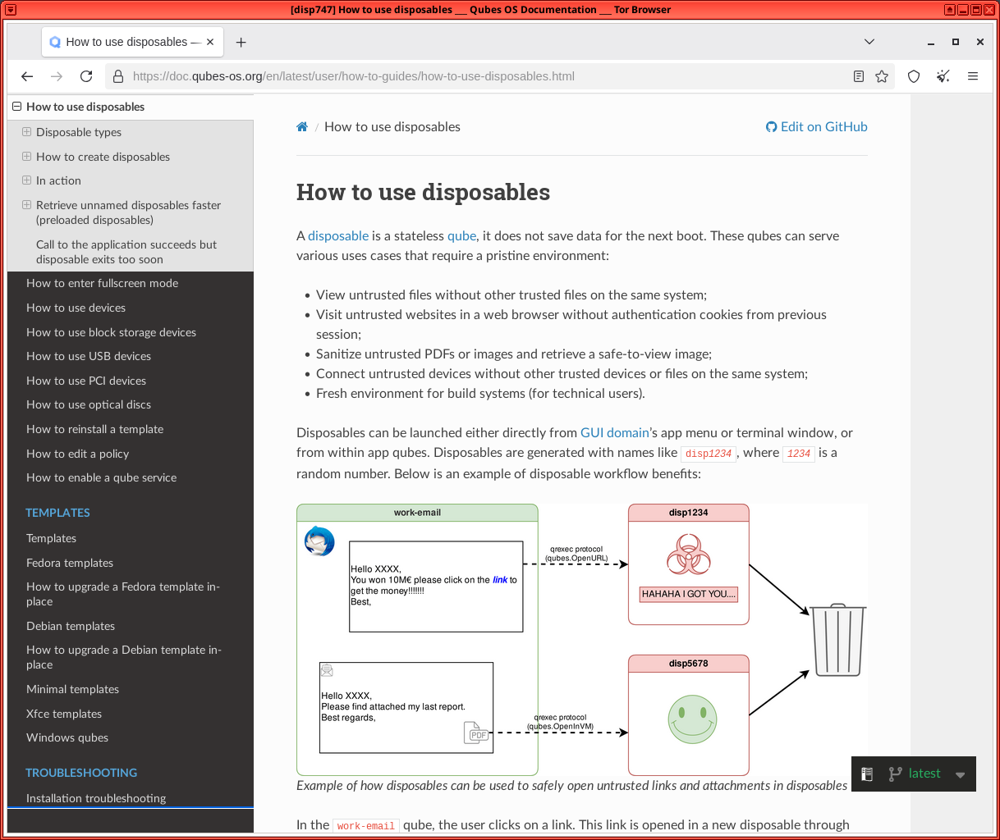

We believe security software like Whonix needs to remain Open Source and independent. Would you help sustain and grow the project? Learn more about our 14 year success story and maybe DONATE!
Network Time SynchronizationDocumentationTorPrevious page: Network Time SynchronizationIndex page: DocumentationNext page: TorQubes Disposables

How to use Disposables in Qubes-Whonix.
 A few usability issues in
Disposables affect anonymity. If the risks are unknown to the user, then
first carefully read this page.
A few usability issues in
Disposables affect anonymity. If the risks are unknown to the user, then
first carefully read this page.
What are Disposables?
In the Qubes Template model, [1] any changes made to a
root
filesystem of an App Qube are lost upon reboot. This is advantageous
for several reasons: it saves time and disk space, and allows faster,
centralized updates for applications that are usually found inside the
root filesystem. However, certain directories are designed to persist
between reboots in order to store files and settings. These directories
are stored in /rw, including /home/user and
/usr/local as well as additional directories defined by
"bind directory" settings. [2]
Qubes does not have a built-in snapshot capability like VirtualBox that can completely revert all changes back to a previous VM state. [3] [4] In other words, no method exists within App Qubes to reverse changes made to the persistent file system without implementing some type of custom solution. To ensure that all filesystem changes are discarded after a session, Qubes offers Disposables. When a Disposable is shut down, the VM is removed from Qubes and all related VM images are deleted from the host filesystem. This method is not yet amnesic and should not be relied upon for anti-forensics!
While Disposables ensure that files do not persist without user intervention, the downside is the user can no longer decide whether or not the current VM state should be kept or destroyed; users must choose beforehand to use a standard App Qube or a Disposable.
Inheritance [5] |
Persistence [6] |
|
|---|---|---|
n/a |
Everything |
|
|
|
|
|
|
|
|
Nothing |
|
The Layered Disposable System
Qubes uses a two-layered approach to Disposables. At the core of the system is a Template upon which a Disposable Template is based. Every time a new Disposable is launched it is based on the Disposable Template - hence, two layers. In a standard Qubes-Whonix installation:
- The Whonix-Workstation™ default Template is
whonix-workstation-18. - The Whonix-Workstation default Disposable Template is called
whonix-workstation-18-dvm. - Each Whonix-Workstation default Disposable
(
disp1, disp2, ...) is based onwhonix-workstation-18-dvm.
Once a Disposable Template is created, its /home/user/ directory can be customized [14] independently of the Template. In this special case, the Disposable Template will continue to inherit changes from the base Template's root filesystem (like package updates), but user files in /home/user/ will persist independently.
It is possible to have multiple Disposable Templates and Disposables
at the same time. Any App Qube can be enabled for use as a
template for Disposables, by setting its template_for_dispvms
property.
In Qubes R4, Qubes-Whonix 18's
default Disposable Template (whonix-workstation-18-dvm) can
be easily created using salt and
will have this property set.
Disposable Traffic Stream Isolation
Whonix-Workstation Disposables work especially well with Whonix-Gateway™. [15] All Disposable traffic is stream-isolated from the traffic of other VMs running in parallel.
Warnings
Category |
Warning |
|---|---|
Amnesic Capability |
|
Ephemeral Whonix-Gateway ProxyVMs |
Using Disposables for both the Whonix Gateway and Workstation in Qubes does not increase security without any corresponding privacy downside, for the following reasons: [17] [18] [19]
|
Spawning Disposables |
|
Named Disposables: Manual Shutdown |
Unlike Disposables spawned from the Whonix default Disposable Template, [26] named Disposables do not automatically shut down when the first user process is terminated. If a fresh Named Disposable is needed, users must first shut down the named Disposable and start a new Disposable instance. [27] Failure to do so could lead to session data from previous activities persisting until the Disposable is properly shut down. |
Tor Browser in a Disposable Template |
Do not start Tor Browser in a Disposable Template! For reasons why, see: Running Tor Browser in Qubes Template. Only start Tor Browser in App Qubes or Disposables, see: Start Tor Browser in a Disposable. |
Tor Browser Updater in a Disposable Template |
Do not start Tor Browser Updater in a Disposable Template! For
reasons why, see: tb-updater in Qubes Disposable Template. Instead,
run Tor Browser
Downloader by Whonix developers in Whonix-Workstation Template
( |
Tor Browser Version |
|
Verify Disposable Status |
|
Whonix-Gateway Linkability |
The Tor Project developer Teor has stated that Tor caches DNS, HS descriptors, pre-emptive circuits, etc. [29] which may lead to linkage between App Qubes and Disposables sharing the same Whonix-Gateway. The extent to which this is a threat for Whonix users has now been documented; see Multiple Whonix-Workstation. |
Setup
Note: Examples below reference GUI steps whenever possible.
Create a Whonix Default Disposable Template based on Whonix-Workstation
2
Create a new AppVM: Qubes App Launcher (blue/grey "Q") →
Settings icon → Qubes Tools →
Create New Qube, for VM type choose
Application, and a VM name you like, for example
whonix-ws-dvm, and choose whonix-workstation-18 as
template. Choose your desired Whonix-Gateway VM in network option.
3
Find the whonix-ws-dvm you just created in Qubes App
Launcher, find its qube settings button, navigate to
Settings → Advanced →
Disposable template, and click this option. After this
step, when you click any app icon for this AppVM in the Qubes menu, it
will spawn a new Disposable VM based on this AppVM instead of opening
this AppVM itself.
4
If you want to interact with the original AppVM after step 3, you should
invoke it through dom0 command
qvm-run whonix-ws-dvm qterminal.
5 Configure the NetVM, storage size, VM label color, memory, and CPU in the qube Settings; all AppVM properties will be inherited by the spawned Disposable VMs.
6
All AppVM files, including the user-specific /home
directory (which normal AppVMs do not inherit), are also inherited by
the spawned Disposable VMs. Do not mess with the template AppVM. Do not
run a browser or do anything that could break the Disposable Template.
Treat it as a template VM.
7
If you have sufficient RAM, enable Preload disposables
option below Disposable template; this option will attempt
to pre-spawn the specified number of Disposable VMs in the background,
reducing wait time when a Disposable VM is requested.
8
If you see error messages in dom0 such as "sdwdate-gui.ConnectCheck from
to sys-whonix denied", run
qvm-tags test-dvm add sdwdate-gui-client to fix the
issue.
9 Done.
Qubes-Whonix Disposables are now ready for use.
Create a Named Whonix Disposable based on Whonix-Workstation
 Optional.
Optional.
Nearly all users can skip steps 1 and 2 below. A specific use case for Disposable naming conventions has not (yet) been identified.
A named Disposable is a Disposable with a fixed name.
A named Disposable is not a Disposable Template.
Therefore when selecting a name for a named Disposable, do
not include -dvm when naming Disposables! This is
because dvm has a different meaning. The meaning of dvm is Disposable
Template. A named Disposable with dvm in its name would be a
contradiction.
Tor Browser will not be inherited from Whonix-Workstation Template
(whonix-workstation-18) if this advice is ignored.
Before creating named Disposables, familiarize yourself with their behavior and read all relevant warnings. Failure to do so could lead to unwanted behavior which occurs without the user's knowledge.
1
Create a Disposable called anon-whonix-disp based on the
whonix-workstation-18-dvm Template.
In dom0 run.
qvm-create -C DispVM -l red --template whonix-workstation-18-dvm anon-whonix-disp
2 Launch QTerminal in the Disposable.
qvm-run -a anon-whonix-disp qterminal
3 Done.
A named Disposable has been created and launched.
TODO - Investigate use cases for this procedure:
- A named Disposable might be useful for a larger root/private image.
- It might also be useful for activities such as building Templates in a Disposable.
Customization
Disposable Templates
Extra caution must be exercised when customizing a Disposable Template. [30] From a privacy perspective, it is ideal to have a Disposable Template that is indistinguishable from any other Whonix-Workstation. If changes are made to the Disposable Template, these may link all of the Disposables via a uniquely generated fingerprint should they be compromised independently. Risky changes include, but are not limited to:
- Installation of obscure programs;
- Uncommon configuration settings; or
- The placement of unique data files.
Always keep in mind the Disposable will likely be exposed to the greatest Internet threats.
Tor Browser is specifically designed to prevent website fingerprinting or identification based on the user's browser fingerprint. It is safest to run Tor Browser in its stock configuration so the fingerprint is less unique, due to commonality with the larger Tor Browser user pool. Each individual browser change can significantly worsen the fingerprint because of the associated entropy, [31] so only make alterations if the impacts are known. See also: tb-updater in Qubes Disposable Template.
A decision must be made in advance whether to disable JavaScript by default. There is a usability-security trade-off to consider: fingerprinting and usability is worsened by disabled JavaScript, but this provides better protection against vulnerabilities. Conversely, enabled JavaScript improves usability and increases the risk of exploitation, but the browser fingerprint is (likely) more common.
Tor Browser in Disposable Template
For most users, Tor Browser customizations in the Disposable Template or Template are discouraged. Advanced users who wish to customize the Disposable Template despite the risks should follow these steps.
Applications other than Torbrowser in Disposable Template
 Customization is completely optional. Only files in /home/user
(or more generally, in /rw) can be customized in a Disposable
Template.
Customization is completely optional. Only files in /home/user
(or more generally, in /rw) can be customized in a Disposable
Template.
1 Launch the application in the Disposable Template.
Either open dom0 terminal and run.
qvm-run -a whonix-workstation-18-dvm <app>
Or use Qube Manager:
dom0 → Qube Manager →
right-click 'whonix-workstation-18-dvm' →
Run command in qube →
type name of the
2 Customize application settings.
Customize the application as per normal procedures.
3 Exit the application.
If required, save application-specific settings, then exit the application so settings are stored on the disk.
4 Shut down the Disposable Template.
Either use a dom0 terminal.
qvm-shutdown whonix-workstation-18-dvm
Or use Qube Manager:
dom0 → Qube Manager →
right-click 'whonix-workstation-18-dvm' →
left-click 'Shutdown'
5 Done.
The changes will be available when the Disposable is restarted.
Delete a Disposable Template
If a Disposable Template has been customized and it is necessary to revert these changes, a Disposable Template can be deleted the same way as any other VM.
Note the Disposable Template cannot be deleted while it is the default disposable template of another VM, otherwise an error message appears. In that case, follow tips found here on how to manually change the default Disposable of VMs to another setting.
dom0 → Qube Manager →
right-click 'whonix-workstation-18-dvm' →
left-click 'Delete qube' [32]
Keep Tor Browser Up-to-date
To obtain the latest Tor Browser, the simplest method is to use
Whonix built-in Tor Browser downloader functionality. Simply update
using Tor Browser Downloader by Whonix (tb-updater) in
Whonix-Workstation Template (whonix-workstation-18) when
performing your usual maintenance updating:
1 Qubes App Launcher
Qubes App Launcher (blue/grey "Q") →
Templates → whonix-workstation-18 →
QTerminal [33] [34]
2 Update the package lists.
Update the package lists.
sudo apt update
3 System upgrade.
sudo apt full-upgrade
4 Tor Browser upgrade.
If Tor Browser has an issue and has not been upgraded, use update-torbrowser to download a new copy.
Launch Tor Browser Downloader by Whonix and follow the instructions. [35]
update-torbrowser --input gui
5 Shut down the Disposable Template. [36]
If running.
dom0 → Qube Manager →
right-click on 'whonix-workstation-18-dvm' →
left-click 'Shutdown'
6 Shut down the Template.
7 Done.
Tor Browser has been updated for future Disposable sessions.
Update a Disposable Template
Changes to the underlying Template
(whonix-workstation-18) are automatically inherited by the
Disposable Template without user intervention. That means package
updates that are applied to whonix-workstation-18 are also
applied to the whonix-workstation-18-dvm.
Usage
Disposables are well-suited for risky and largely independent activities, like web browsing or opening untrusted files. In contrast, App Qubes might be better suited for activities necessitating file persistence, like email clients with local email storage.
With either kind of VM, Qubes' VM integration tools like secure file copy and secure clipboard ensure that clean, trusted files and text can be easily and safely transferred to trusted VMs (if necessary).
User Tips
Category |
Recommendation |
|---|---|
Data Storage |
|
Disposable Shutdown |
A Disposable automatically shuts down when the first user-launched process is terminated. For example, if a new Disposable is created by launching Tor Browser and a user simultaneously starts typing in an editor later on, all this work will be lost after Tor Browser is closed. To avoid this, first launch a terminal in the Disposable and then launch additional applications from the terminal. This way the Disposable is only destroyed after exiting the terminal. |
Offline Disposables |
|
Shortcuts |
|
Spawning Disposables from other App Qubes |
|
Add a Desktop Shortcut
1 From the Qubes application menu, drag and drop a menu item onto the desktop.
2 Double-click the newly created launcher to start it.
3 At first start, it is safe to click "Mark Executable".
4 Done.
A desktop shortcut has been added.
Add an Xfce Panel Shortcut
From the Qubes application menu, drag and drop the menu item onto the panel.
Start Tor Browser in a Disposable
Tor Browser can be started via the GUI or on the command line.
If you are using a GUI.
Qubes App Launcher (blue/grey "Q") →
Disposable: whonix-workstation-18-dvm →
Tor Browser (AnonDist)
If you are using a terminal.
qvm-run --dispvm=whonix-workstation-18-dvm torbrowser
After launch, always first check the Tor Browser version!
Figure: Tor Browser in Qubes-Whonix Disposable

Start Terminal Emulator in a Disposable
Terminal emulator qterminal can be started via the GUI
or on the command line.
If you are using a GUI, complete the following steps.
Qubes App Launcher (blue/grey "Q") →
Disposable: whonix-workstation-18-dvm →
QTerminal
If you are using a terminal, complete the following steps.
qvm-run --dispvm=whonix-workstation-18-dvm qterminal
TODO
- TODO document how to use multiple Disposable Templates - https://forums.whonix.org/t/is-anyone-interested-in-using-multiple-dvm-templates-based-on-whonix-ws-dvm/5757/5
Footnotes
- App Qubes and Templates.
- How to make any file persistent (bind-dirs).
- Apart from Volume backup
and revert using
qvm-volumewhich is command line interface (CLI) and "intended for advanced users". - Qubes VM snapshots using git / SVN.
- Upon creation.
- Following shutdown.
- https://www.qubes-os.org/doc/templates/
- The former name was Template.
- The former name was AppVM or TemplateBasedVM.
- https://github.com/QubesOS/qubes-issues/issues/4175
- Former names included Disposable Template, DVM Template, and DVM.
- https://www.qubes-os.org/doc/glossary/#disposable
- Former names included Disposable and DispVM.
- https://www.qubes-os.org/doc/disposable-customization/
- Because each VM is assigned a unique, internal IP address.
- Qubes user documentation confirming the non-existence of an anti-forensics feature: Qubes Disposables and Local Forensics Tickets related to a selective (for Disposables) Anti-Forensics Feature: * Disposables: support for in-RAM execution only (for anti-forensics) #904 - GitHub Issue * Forensics-proof DisposableVMs #1819 (closed duplicate) * 4.0rc1 dirty shutdown causes disposables to remain persistent #3037 - GitHub Issue * Opt-out logs cleanup on qube removal #8569 Ticket related to booting into Live Mode: * implement live boot by porting grub-live to Qubes - amnesia / non-persistent boot / anti-forensics Common issues: * Wipe Video RAM on Shutdown #1563 * Wipe RAM of VMs synchronously when shut down and killed #1562 Information on Qubes Disposable technical implementation: * Disposable customization | Qubes OS * Disposable implementation | Qubes OS * Disposables do not run entirely in RAM - Google Groups * Ticket explaining, that Tails in a Qubes VM would not make Qubes amnesic. Live ISO: * Live USB/DVD #1018 * enable installation of Qubes from live USB/CD/DVD #1965 * document (for developers) how to create Qubes Live USB #1970
- Disposables are not Amnesic.
- https://github.com/QubesOS/qubes-issues/issues/904
- Tor Entry Guards.
- This is another reminder of why full disk encryption should always be used on the host.
- https://gitlab.torproject.org/legacy/trac/-/issues/8240
- The reason is there are both malicious and benign guards in the Tor network. The more often the user "rolls the dice" (changes guards), the greater the chance of striking out.
- The solution to the first problem is only allowing in-RAM execution of Disposables, but this is not planned for implementation in the short-term. There is no perfect solution to the second problem. That said, there is an actual unstated security-privacy trade-off by running this configuration. Theoretically, an ephemeral Whonix-Gateway ProxyVM is only able to be infected for a single session (via the /home, /usr/local and /rw directories), since it is discarded upon shutdown. This provides a counterbalance to the increased threat of malicious guards, as Whonix becomes more "Tails-like".
- Disposables are created in one of two ways:
Open in Disposable. On the command line (domU), run. qvm-open-in-dvmEdit/View in Disposable. From the GUI context-menu (domU).File→Actions→Edit/View in Disposable - On the command line (dom0), run. qvm-prefs -s vmname dispvm_netvm sys-whonix
- See Disposable Shutdown for more on this.
- This is because named Disposables are created using a similar method to that which is used to create App Qubes. This means that named Disposables -- in some respects -- exhibit behavior similar to that of an App Qube. For example, behavior such as persistent VM settings across restarts; this includes, but is not limited to settings like --netvm, --autostart and --label to name a few. Before starting a new named Disposable instance, first verify in Qube Manager that the VM is fully shut down.
- There was a Qubes bug in the past which has been fixed since Qubes R4.2: * Qubes bug can lead to the Disposable Template starting instead of the Disposable. * https://forums.whonix.org/t/whonix-14-starting-a-whonix-14-dispvm-actually-starts-the-templatebasedvm-instead/5579
- https://lists.torproject.org/pipermail/tor-dev/2016-October/011591.html
- Qubes documentation: Disposable Customization.
- 33 bits of entropy will identify one individual out of several billion.
- Or on the command line (dom0), run. qvm-remove <vmname>
dom0→Qube Manager→right-click on 'whonix-workstation-18'→click 'Run command in qube'→type 'qterminal'- On the command line (dom0), run. qvm-run -a whonix-workstation-18 qterminal
- update-torbrowser
- On the command line (dom0), run.
qvm-shutdown whonix-workstation-18-dvm
or
Disposable Template command line (domU), run. sudo poweroff - Github: Split Browser
- On the command line (dom0), run.qvm-prefs disp<1 | 2 | ...> netvm none
- See: Qubes Disposables.
- See Micahflee's blog on How Qubes makes handling pdfs way safer.
Categories: Documentation